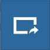
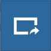

Exploring Maps¶
From the Explore Maps link of the navigation bar you can reach the Maps List page (see Maps). Select a map you are interested in and click on it, the Map Page will open.

The View Map button
Click on the View Map button to open the Map Viewer.

The Map View
The Map Viewer (based on MapStore) provides the following tools:
- the Table of Contents (TOC) to manage the map contents;
- the Basemap Switcher to change the basemap (see the next paragraphs);
- the Search Bar to search by location, name and coordinates (see the paragraph below);
- the Options Menu Tools which contains the link to the Print tool, to the layers Catalog and to the Measure tool;
- the Sidebar and its tools such as the Zoom tools and the Get Features Info tool;
- the Footer Tools to manage the scale of the map, to track the mouse coordinates and change the CRS (Coordinates Reference System).
Search Bar¶
The Search Bar
The map will automatically re-center on that area delimiting it by a polygon in the case of an area, by a line in the case of a linear shape (e.g. streets, streams) and by a marker in the case of a point.
Result of a Search
Sidebar Tools¶

{kind=link}
{kind=link}

The Default Sidebar
{kind=link}
The Expanded Sidebar
The Sidebar contains the following tools:
The Query Objects on map allows you to get feature information through the button. It allows you to retrieve information about the features of some layers by clicking them directly on the map.

Querying Objects on map
When clicking on map a new panel opens. That panel will show you all the information about the clicked features for each active loaded layer.
You can Zoom To Max Extent by clicking
 .
.You can switch between the previous and the next zoom level through the Go Back button
 and the Go Forward one .
and the Go Forward one .The Switch to Full Screen button allows to have a full screen map.
{kind=link}
{kind=link}
{kind=link}
Basemap Switcher¶
By deafault, GeoNode allows to enrich maps with many world backgrounds:
- OpenStreetMap
- OpenTopoMap
- Sentinel-2-cloudless
{kind=link}
The Basemap Switcher Tool
You can also decide to have an Empty Background.
{kind=link}
Footer Tools¶
At the bottom of the map, the Footer shows you the Scale of the map and allows you to change it.

The Map Scale
The button allows you to see the pointer Coordinates and to change the Coordinates Reference System (CRS), WGS 84 by default.
{kind=link}
The Pointer Coordinates and the CRS